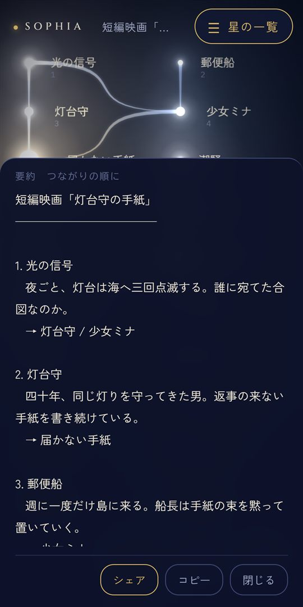

GUIDE
アイデアを整理するコツバラバラの思いつきを、きれいな星座にまとめる
いいことを思いついたはずなのに、あとで見返すとバラバラ。書きたいことはあるのに、うまくまとまらない。そんなときに役立つ、整理のコツをまとめました。むずかしいことは何もありません。
思いつきがまとまらない3つの理由
1. 書く場所がバラバラ
スマホのメモ、ノートのすみっこ、自分あてのメッセージ、付せん。思いついた場所でそのまま書くので、あとで集めようとしても、どこに書いたか思い出せません。
2. 書いたまま、見返さない
メモは書いた瞬間がいちばんスッキリします。でも、縦にずらっと並んだメモは、あとから見ても楽しくないので、だんだん開かなくなります。
3. つながりが見えない
思いつきは、ひとつずつより「組み合わせ」で光ります。でも、文字が並んでいるだけでは、どれとどれが関係しているのかが見えません。まとまらない原因は、数が多いことより「つながりが見えないこと」なんです。
コツは「出す → つなぐ → まとめる」の3つだけ
- 出す：いい・悪いを気にせず、思いついたことを全部出す。順番はまだ考えない
- つなぐ：出したものを眺めて、「これとこれ、関係あるかも」と思ったものを結ぶ
- まとめる：つないだ順に並べて、文章にする
うまくいかないときは、たいてい「出す」と「つなぐ」を同時にやろうとしています。先に全部出して、つなぐのはあとから。これだけで、ぐっと楽になります。
整理アプリを選ぶときの4つのポイント
- すぐ書けること：思いつきは数秒で消えてしまいます。開いてすぐ書けるのがいちばん
- あとから動かせる・つなげること：「つなぐ」をやりやすいかどうか
- 全体がひと目で見えること：たくさん書いても、全体の形がわかるか
- 見ていて楽しいこと：きれい、気持ちいい、また開きたくなる。続けるには、じつはこれがいちばん大事です
やり方ごとの、いいところ・苦手なところ
| やり方 | いいところ | 苦手なところ |
|---|---|---|
| メモアプリ | すぐ書ける | 並ぶだけで、つながりが見えない |
| ノートに手書き | 自由に書ける | あとから動かせない。持ち歩くのが大変 |
| 付せん | 動かせる。全体が見える | なくしやすい。残しておけない |
| SOPHIA | 星にして置いて、なぞってつなぐ。全体が見えて、つないだ順に文章にできる。きれいで、触って気持ちいい | 表の計算や、締め切りの管理には向かない |
SOPHIA で整理してみる
SOPHIA（ソフィア）は、思いつきを「星」にして、星と星をつないで星座にしていくアプリです。「出す → つなぐ → まとめる」を、そのまま指先でできるように作りました。

- 出す：画面をダブルタップすると、星が生まれます。名前はあとからで大丈夫
- 書き足す：星をタップすると、メモを書けます
- つなぐ：星から星へ指でなぞると、光の線でつながります。長押しすると星を動かせます
- 色分け：星に色をつけて、仲間ごとに分けられます
- まとめる：「要約」を押すと、つないだ順に文章になります

例：志望理由書をまとめる
- 「この学校に興味を持ったきっかけ」「好きな教科」「部活でがんばったこと」「将来やってみたいこと」など、書きたいことを星にして置いていきます
- 「この順番で話すと伝わりそう」と思う順に、星をなぞってつなぎます
- しっくりこなければ、線をつなぎ直すだけで、別の順番を試せます
- 決まったら「要約」。そのまま下書きになります
同じやり方で、作文、レポート、発表の順番、旅行の計画なども整理できます。テスト前に、覚えることどうしをつないでおくのもおすすめです。
まとめ
- まとまらないのは、数が多いからより「つながりが見えない」から
- コツは「出す → つなぐ → まとめる」。先に全部出して、つなぐのはあとから
- 続けるには、見ていて楽しいことも大事